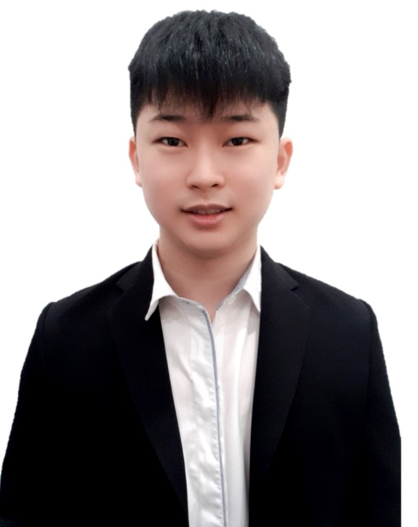

Lam Jun Wen

Summary
Experienced in IT infrastructure and support, coordinating with diverse stakeholders for project success.
Enthusiastic learner passionate about expanding expertise in IT domains, committed to working long hours when required, and ready to travel as needed.
Education
Work Experience
-
Senior IT Desktop Analyst - Nirvana Memorial Park (Kulai) Sdn Bhd
Jan 2018 - Current
- To provide 1st, 2nd and 3rd level support to Southern region and other assigned states via phone and e-Ticket system.
- To monitor, resolve and escalate e-tickets to higher level.
- To maintain and support of both Local, VPN, LAN and WAN connectivity.
- To offer end user computing support to all users.
- To source, compare and negotiating price for IT related purchases.
- To provision standard application or utilities, such as Microsoft Office and Intranet to end-users.
- To monitor and administrate email, IT services and other servers to ensure good service uptime.
- To ensure proper IT asset tagging on devices and upkeep proper IT inventory.
- To ensure proper security standards are followed when provide IT services.
- To maintain good work ethics, due diligence, discipline, professionalism and dedication all times.
- Any other duties as assigned by the superior/ management to you from time to time.
-
Junior Engineer - Teletouch Technologies Sdn Bhd
Jul 2017 - Nov 2017 (5 months)
- Install & configure door access and barrier gate system
- Setup and troubleshooting for CCTV, IP camera, AP, NVR, and DVR
- Splicing fiber optic for SMATV, GPON, and TM
- Wiring for emergency break glass, key switch, reader, EMLock, fire alarm, and panic button.
- Provide brief training for customer
- Provide on-site support to customer office PC when needed.
-
Service Technician - YONG MIN OFFICE AUTOMATION SDN BHD
May 2017 - Jun 2017 (2 months)
- Service and replace Ricoh printer spare part
- Travel to the client company to perform monthly maintenance and urgent service in time
Certificate
- Fortigate Firewall Administration Course - Udemy (13 Mar 2024)
- ITIL Foundation Certificate in IT Service Management - PeopleCert (14 Dec 2022)
- The Evolution of Cybersecurity - Fortinet Training Institute (11 Feb 2022)
- Microsoft Excel 2016/2019 Intermediate and Advanced Level - TED LEARNING SDN BHD (13-14 Dec 2021)
- NSE 2 Security Associate - Fortinet Training Institute (13 Aug 2021)
- NSE 1 Security Associate - Fortinet Training Institute (13 Aug 2021)
- Basic Occupational First Aid, CPR & AED Training - CERT Academy (19-20 April 2021)
Languages
- Mandarin: ⭐️⭐️⭐️⭐️⭐️
- English: ⭐️⭐️⭐️⭐️
- Malay: ⭐️⭐️
Others: